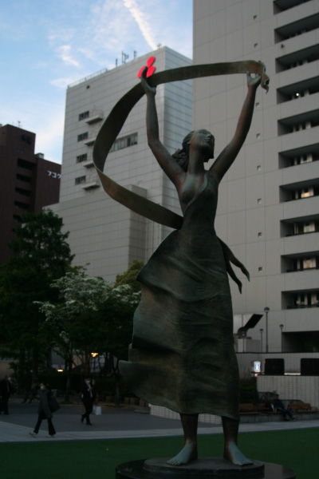
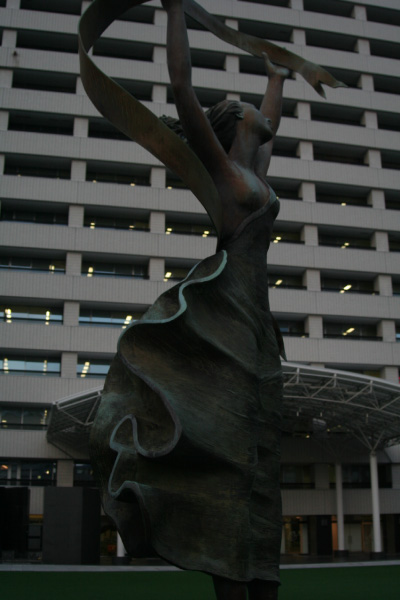
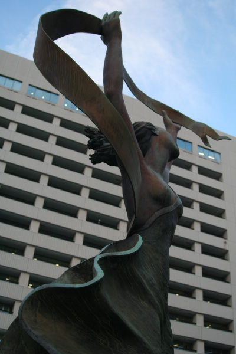
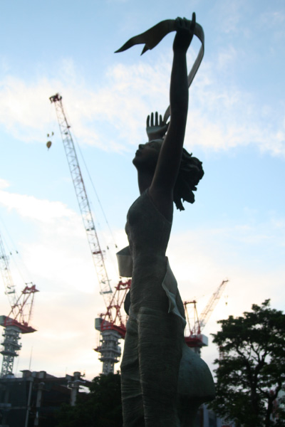

エスター・ワートハイマー
   
作者はポーランド出身で、カナダ、モントリオールを拠点に活動した女性の彫刻家。市役
所西側広場に立つこの作品は福岡市市制100周年を記念して設置された。イタリア語で
「春」という意味の「プリマヴェーラ」。春の風を受けてなびく髪やスカートは繁栄への
願いを表し、大地に踏みしめた力強い両足は確かな成長の礎を表現。福岡市の成長と繁栄
を願って制作された。彼女はダンサーのような伸びやかで躍動的な作品を多く生み出し、
その作品は日本、アメリカのフロリダ、カリフォルニア、ワシントンDCなどで見られる。